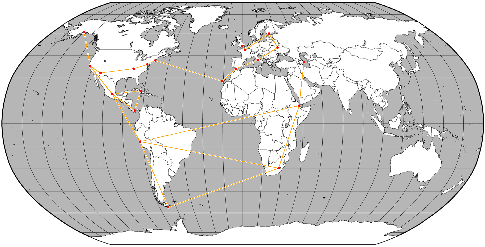
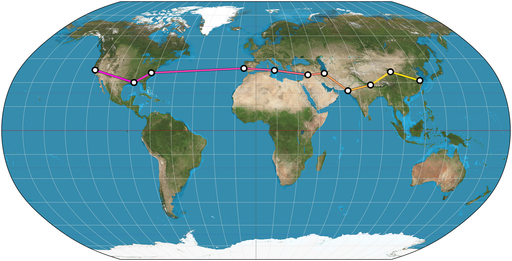

This documentation is written as a tutorial. Feel free to clone the GitHub repo, and replicate the steps in this document to learn how to produce the results.
This is a tool to display and connect points on a map. As users are expected to have differing and particular mapping needs, it has been built to be modular, flexible, and customizable. It was developed for a UNIX-based operating system, but should work equally well on a Windows OS (this has not been tested). The script relies on the pyproj and pygeocoder libraries, as well as matplotlib, numpy and the Python Imaging Library. All required packages can be installed easily using pip. This tool was developed using Python 2.7.4. Note that the tool makes use of the Google Maps API and therefore requires an internet connection to work.
At its core, the script takes as input a textfile of locations, and outputs a map with those locations marked by points. The script can also connect these locations in sequence on the map, using lines. The user may also specify different types of connections between the locations, which will be reflected graphically in the lines. As such, the script requires the following command-line options, in sequence:
- Input Textfile: a list of locations and, optionally, descriptors to differentiate types of connections between places.
- Lines: whether you want the program to connect the plotted points with lines or not. This argument should be either 'y' or 'n'. These two possible inputs correspond to lines on and lines off, respectively.
- Colors: whether you want the program to differentiate the types of connections according to their descriptors, and thereupon assign lines of different type different colors.This argument should be either 'y' or 'n' for colors on or colors off. Note: with colors off, all lines will be of the same color. You can specify that color by editing the source code. Furthermore, your input textfile will need to be formatted differently depending on whether you set colors on or off.
- Image File: the map onto which you want the program to plot the points (and lines).
python travelmap.py [textfile] [lines:y/n] [colors:y/n] [imagefile]
Beyond that, the program offers plenty of opportunity to customize the output map: e.g. change the color of the markers, their size, the thickness of the lines, the color of the lines (when you have colors turned off), etc. We will discuss those a little later. First, we must discuss the format of the input textfile. These formats differ depending on whether colors are turned on or off. Both formats, however, allow for commented text: all lines starting with a pound sign ('#') will be ignored by the script. Every location must be on its own line. Note that the program essentially looks up the the locations on Google Maps to find their coordinates, so make sure your inputs are sufficiently well-described for Google Maps to return the right result. Without further ado, here is an example file (example_nocolors1.txt) for colors off:
# This is a comment.
Rome, Italy
Washington DC
New York City
Nuuk, Greenland
If you have lines turned off, the script will just plot each one of these locations on the map with points. With the default settings, that will look like this (scaled to fit):

The command to produce this map is:
python travelmap.py example_nocolors1.txt n n Robinson_Color.png
If you turn lines on, the map will look like this (scaled to fit):

As produced by this command:
python travelmap.py example_nocolors1.txt y n Robinson_Color.png
You may notice that the last argument in that command is Robinson_Color.png, corresponding to a colored Robinson Projection Map of the world. This is one of the two maps included with this program. The other is Robinson_BW.png, a Black-and-White Robinson Projection. The program is configured to handle both of these maps. You can also use other maps of your choosing (more on that later). These maps are, for all intents and purposes, interchangeable. I will use both in the course of this documentation.
You can use the input textfile to create more complex networks. For example, we'll use the settings from the previous map, but a more elaborate input textfile, example_nocolors2.txt.
As produced by the following command:
python travelmap.py example_nocolors2.txt y n Robinson_Color.png
To do the same on the Black-and-White Robinson Map, just run:
python travelmap.py example_nocolors2.txt y n Robinson_BW.png
The resultant map looks like this:
The previous examples have demonstrated the map output with default settings. Now let's change those up a little. Lines 146 to 178 in travelmap.py offer options for configuring the markers, the lines, and their outlines (strokes). The code is fairly well-commented, so the options should be self-explanatory. Note that when specifying the colors, the PIL Format must be used. Below is an example of such a change in settings. The points connected by the map are the same as in the previous map.

So far we've been running all our commands with colors off. Now we'll turn that on. The colors option allows you to specify the types of connections between points, and colors the connecting lines accordingly. This means that the colors on option requires a different file format. This is best explained by example. Suppose you have been travelling. You use this tool to track your travels, but you really want to differentiate betweenair-and rail-travel. You do this simply by writing, on a new line, the type of connection between two cities, i.e. “air” or “rail”. The program then assigns a different color to each type of connection, and colors all lines according to their connections. Below is an example file (example_colors1.txt):
# For the colors option: differentiating between Air and Rail.
Bali
Air
Shanghai
Rail
Ulaanbataar
Air
Tallinn, Estonia
Rail
Berlin, Germany
Rail
Barcelona, Spain
Air
Reykjavik
Air
Vermont
Rail
Cleveland, Ohio
Rail
Tucson, AZ
Air
French Guyana
Air
Madagascar
Using default settings and the following command:
python travelmap.py example_colors1.txt y y Robinson_BW.png
The resultant map looks like this:

Just as with the colors off option, it is possible to configure the markers and their connecting lines in terms of thickness, color, etc. For the rest of the documentation, I will use a set of settings configured in favor of legibility. In particular, I set dotcolor="white", strokecolor="black", r=8, sw=6, lsc="black", lsw=2, and lw=6.Running the same command as above, with those configured settings, we get this map:

Note that the blue lines between places correspond to lines reading “air” in the input textfile, and the red lines correspond to lines reading “rail”. If the pattern is still not clear, read the textfile and trace the connections on the map. Let's see another example (example_colors2.txt), this time with six types of connections.

Produced by this command:
python travelmap.py example_colors1.txt y y Robinson_BW.png
You may have wondered how these colors are automatically assigned. This is done on lines 173 and 205, and uses a colormap from matplotlib. See here for colormap documentation. On line 173, you may specify a colormap of your choosing. The default colormap, jet, covers the traditional colors of the rainbow. Alternatives are available, e.g. solid gradients, etc. For a list of usable colorschemes, see the aforementioned documentation. On line 205, the space of possible colors is partitioned into as many colors as we have distinct connection-types. We'll experiment with one other colormap, the spring colormap, which provides a gradient from magenta to yellow. On line 173, I change “jet” to “spring”. Otherwise, I run the exact same command as in the previous example, on example-colors2.txt. That yields this map:
Some colormaps are better than others for certain tasks. In particular many colormaps provide smooth two-color gradients, which are good if you want to illustrate some sort of gradual transition. For example, suppose you are travelling from San Francisco to Shanghai, and like to associate the color magenta with the distant past, and the color yellow with the present. You could use the spring colormap to produce the following map:
For that map, the input text was example_colors3.txt:
San Francisco
1
New Orleans
2
Durham, NC
3
Lisbon
4
Sicily
5
Syria
6
Tehran
7
Karachi
8
Nepal
9
Xining
10
Shanghai
If you've run any of these commands yet, you may have noticed that the output of the program is usually an image file of the name Plotted_[Input-Textfile-Name-Here]_[Input-Imagefile-Name-Here].png. Even though this is effective for preventing accidental overwriting, it may not be the best or most suitable naming convention. You can change this easily on line 219.
So far, the only inputs we have discussed have been named locations. It is also perfectly possible to use coordinates as input. (Remember that the program only queries the Google Maps API, and returns the coordinates of the top result for a given location, so it is reasonable that the coordinates returned will always correspond to the coordinates used as input.) For example, on a given line in your input-textfile, you might write either Naples, Italy or 40.8450 N, 14.2583 E. They're (almost) interchangeable.
One thing remains to be discussed: adapting this program for other maps. In particular, lines 94 through 109, while currently configured for the two included maps, could easily be set to allow for the use of other images of maps. If you're using other Robinson Maps, you would only have to make sure that imgw,imgh,w and h are set correctly. Beware: there are maps out there that are falsely labelled as Robinson Maps. The differences can be subtle.
Finally, I assume that it is also possible to change some of the configurations in the makecoords function so as to have this program work on other Map Projections as well. I have generally tried to write code that is reasonably modular and easy to adapt.
I hope to implement all of the following in the near future:
- Currently, this program only plots straight lines between places. I think straight lines are a little bit ugly, and also not quite optimal for the task. It would be better if it were plotting geodesics between places, or at least if there were an option for this.
- Additionally, long straight lines occasionally seem unrealistic, so it can be desirable to use markers to split up the long line into shorter lines, thereby guiding the overall path more realistically. However, this may introduce far more markers than desired. It would be good to have an option that allows for the placement of invisible markers.
- The output for connecting two points on the eastern and western edges of the map can be quite ugly: for example, connecting Hawaii and New Zealand, in reality, warrants a line across the Pacific. However, the program will currently draw a line straight across the world map, which is as unrealistic as it is unpleasant to look at. One possibility to solve this is to have lines ‘wrap around’ the edges of the map, with some way to visually distinguish them from each other to prevent confusion. Another is to reroute such paths via the north or south poles such that they are unlikely to interfere with other lines.
- The user should be able to submit the settings for line-thickness, color, etc. using an external file containing these settings, rather than having to edit the script.
This script ships with two Robinson Projection Maps based on open-source images:
- Robinson_BW.png: Courtesy of the University of Alabama Cartographic Research Lab.
- Robinson_Color.png: from Wikipedia by User:Strebe. Distributed as CC-BY-SA 3.0.
{kind=link}
You can view the GitHub repository here. Please contact me if you find any bugs or use my script for any interesting derivative work — I'd like to see what you come up with.
This work is licensed under a Creative Commons Attribution-NonCommercial-ShareAlike 4.0 International License.